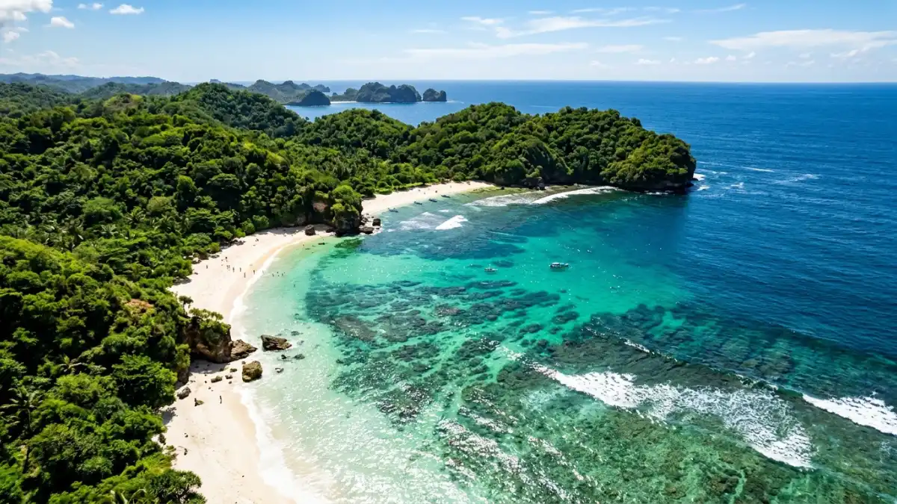

IlustrasiPantai Balekambang Malang
IlustrasiPantai Balekambang Malang
Rekomendasi pantai Malang terbaik mencakup Balekambang, Tiga Warna, Sendiki, dan Ngantep, yang tersebar di sepanjang Malang Selatan dengan karakter pasir putih dan ombak Samudra Hindia yang khas.
- Kenapa Malang Punya Banyak Pantai Menarik?
- Apa Pantai Paling Terkenal di Malang?
- Pantai Mana yang Cocok untuk Snorkeling dan Aktivitas Air?
- Pantai Mana yang Dekat dari Pusat Kota Malang?
- Apa yang Perlu Disiapkan Sebelum ke Pantai Malang Selatan?
- Faktor Apa Saja yang Membedakan Setiap Pantai di Malang?
- Apa Kesalahan Umum saat Berwisata ke Pantai Malang?
- Tips Memilih Pantai di Malang Sesuai Kebutuhan
- Kesimpulan
Kenapa Malang Punya Banyak Pantai Menarik?
Malang punya banyak pantai menarik karena wilayah selatannya berbatasan langsung dengan Samudra Hindia sepanjang jalur lintas selatan Jawa Timur.
Wilayah Malang Selatan, khususnya di Kecamatan Bantur, Sumbermanjing Wetan, Gedangan, dan Tirtoyudo, memiliki garis pantai yang masih relatif alami dibandingkan pantai-pantai yang lebih dulu ramai di Bali atau Yogyakarta.
Karakter geografisnya berbukit dan berkarang, sehingga banyak pantai di kawasan ini tersembunyi di balik perbukitan dan baru bisa diakses lewat jalan desa yang berkelok.
Kombinasi pasir putih, air laut jernih, dan formasi karang membuat sebagian pantainya cocok untuk snorkeling karena ombak sudah terpecah sebelum mencapai bibir pantai.
Apa Pantai Paling Terkenal di Malang?
Pantai paling terkenal di Malang adalah Pantai Balekambang karena punya pura kecil di atas batu karang yang terhubung jembatan beton ke daratan.
Pantai ini terletak di Dusun Sumber Jambe, Desa Srigonco, Kecamatan Bantur, Kabupaten Malang, berjarak sekitar 58-65 kilometer dari pusat Kota Malang.
Pura bernama Amarta Jati di pantai ini masih aktif digunakan untuk upacara keagamaan umat Hindu, terutama saat Hari Raya Nyepi, sehingga suasana yang terbentuk adalah perpaduan wisata alam dan wisata religi.
Pantai Balekambang buka 24 jam dan cocok sebagai pilihan pertama bagi wisatawan yang baru pertama kali menjelajah pantai Malang Selatan karena akses jalannya lebih mudah dibanding pantai-pantai konservasi.
Pantai Mana yang Cocok untuk Snorkeling dan Aktivitas Air?
Pantai yang cocok untuk snorkeling di Malang antara lain Pantai Sendang Biru, Bolu-Bolu, dan Teluk Asmara karena air lautnya jernih dengan ombak relatif tenang.
Ketiga pantai ini memiliki kesamaan, yaitu terumbu karang alami yang berfungsi sebagai habitat bagi berbagai spesies ikan tropis, sehingga sangat sesuai untuk snorkeling bagi pemula.
Pantai Teluk Asmara bahkan dijuluki sebagai "Raja Ampat-nya Malang" karena gugusan pulau karang kecil dan air lautnya yang jernih serta landai.
Pembahasan lebih detail mengenai pantai-pantai untuk snorkeling dan aktivitas air tersedia pada artikel Pantai di Malang untuk Snorkeling dan Aktivitas Air.

Ilustrasi Pesona keindahan Pantai Tiga Warna Malang yang cocok untuk aktivitas air dan snorkeling.Pantai Mana yang Dekat dari Pusat Kota Malang?
Pantai yang relatif lebih dekat dari pusat Kota Malang adalah Balekambang dengan waktu tempuh sekitar 1 jam 45 menit hingga 2 jam menggunakan kendaraan pribadi.
Sebagai perbandingan, pantai-pantai di kawasan konservasi seperti Tiga Warna berjarak lebih jauh, sekitar 72-76 kilometer dengan waktu tempuh 2 sampai 2,5 jam dari pusat kota.
Pantai Sendang Biru juga membutuhkan waktu tempuh dua hingga tiga jam karena jalannya berkelok dan naik turun bukit.
Wisatawan yang waktunya terbatas biasanya memprioritaskan pantai yang jaraknya lebih dekat terlebih dahulu, sementara yang berencana menginap bisa menjangkau pantai-pantai yang lebih jauh sekaligus dalam satu perjalanan.
Apa yang Perlu Disiapkan Sebelum ke Pantai Malang Selatan?
Sebelum ke pantai Malang Selatan, wisatawan perlu menyiapkan kendaraan yang layak untuk jalan menanjak dan berkelok, uang tunai untuk tiket masuk, serta reservasi lebih dulu untuk pantai kawasan konservasi.
Beberapa pantai seperti Tiga Warna mewajibkan reservasi minimal satu minggu sebelum kunjungan karena jumlah pengunjung dibatasi hingga 100 orang per hari, dan pengunjung wajib didampingi pemandu selama di area pantai.
Selain itu, banyak pantai di kawasan ini yang fasilitasnya masih sederhana, seperti tidak tersedianya warung makan, sehingga membawa bekal sendiri menjadi hal yang bijak.
Sinyal telepon seluler di sepanjang rute Malang Selatan juga masih terbatas di beberapa titik, sehingga sebaiknya mengunduh peta offline sebelum berangkat.
Faktor Apa Saja yang Membedakan Setiap Pantai di Malang?
Faktor yang membedakan setiap pantai di Malang meliputi tingkat aksesibilitas, ketersediaan fasilitas, ombak, serta daya tarik utama seperti karang unik, kolam alami, atau wisata religi.
| Pantai | Daya Tarik Utama | Karakter Ombak |
|---|---|---|
| Balekambang | Pura di atas karang | Sedang |
| Tiga Warna | Gradasi warna air laut | Tenang, terpecah karang |
| Sendiki | Pasir putih, ombak tinggi | Cukup tinggi |
| Ngantep | Spot surfing dan mancing | Kuat |
| Kondang Merak | Suasana asri, jarang ramai | Tenang |
| Ngudel | Batu karang unik, cemara udang | Sedang |
Perbedaan karakter ini penting diperhatikan, terutama bagi wisatawan yang membawa anak-anak atau tidak terbiasa berenang di laut lepas, karena beberapa pantai seperti Ngantep memang lebih cocok untuk berselancar dibanding berenang santai.
Apa Kesalahan Umum saat Berwisata ke Pantai Malang?
Kesalahan umum saat berwisata ke pantai Malang adalah tidak melakukan reservasi lebih dulu untuk pantai konservasi, meremehkan waktu tempuh, dan berenang di area berombak kuat tanpa pengawasan.
Banyak wisatawan yang datang langsung ke Pantai Tiga Warna tanpa reservasi sehingga tidak bisa masuk karena kuota harian sudah penuh.
Kesalahan lain adalah menganggap semua pantai di Malang Selatan bisa ditempuh dalam waktu singkat, padahal beberapa lokasi membutuhkan perjalanan dua hingga tiga jam dengan medan menanjak.
Di pantai dengan ombak yang kuat seperti Ngantep, para wisatawan disarankan untuk tidak berenang terlalu jauh dari tepi pantai demi menjaga keselamatan.
Tips Memilih Pantai di Malang Sesuai Kebutuhan
Beberapa tips berikut membantu memilih pantai yang paling sesuai dengan gaya liburan:
- Pilih Balekambang jika ingin akses mudah dan suasana religi.
- Pilih Tiga Warna atau Teluk Asmara jika ingin snorkeling di area konservasi.
- Pilih Ngantep jika tertarik berselancar atau memancing.
- Pilih Kondang Merak atau Ngudel jika mencari suasana tenang dan tidak terlalu ramai.
- Pilih Sendang Biru jika ingin sekaligus menikmati kuliner hasil laut segar.
Kesimpulan
Rekomendasi pantai Malang yang paling sesuai tergantung pada prioritas wisatawan: kemudahan akses, aktivitas snorkeling, suasana tenang, atau wisata religi.
Balekambang menjadi pilihan paling praktis untuk pemula, sementara Tiga Warna dan Teluk Asmara cocok bagi yang ingin pengalaman snorkeling di kawasan konservasi.
Sebelum berangkat, pastikan reservasi sudah dilakukan bila diperlukan, kendaraan dalam kondisi baik untuk medan berbukit, dan bekal makanan tersedia karena fasilitas di sejumlah pantai masih terbatas.
FAQ (Pertanyaan yang Sering Diajukan)